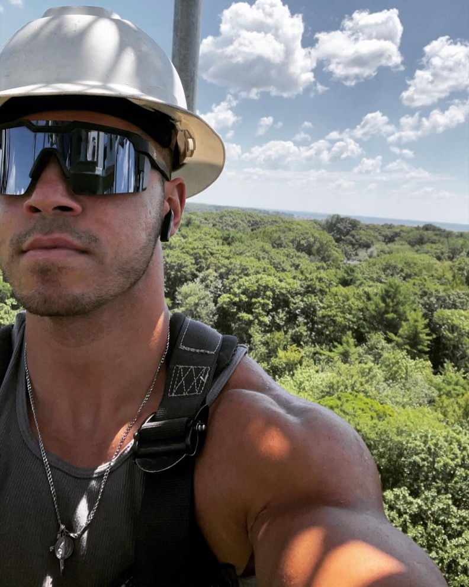
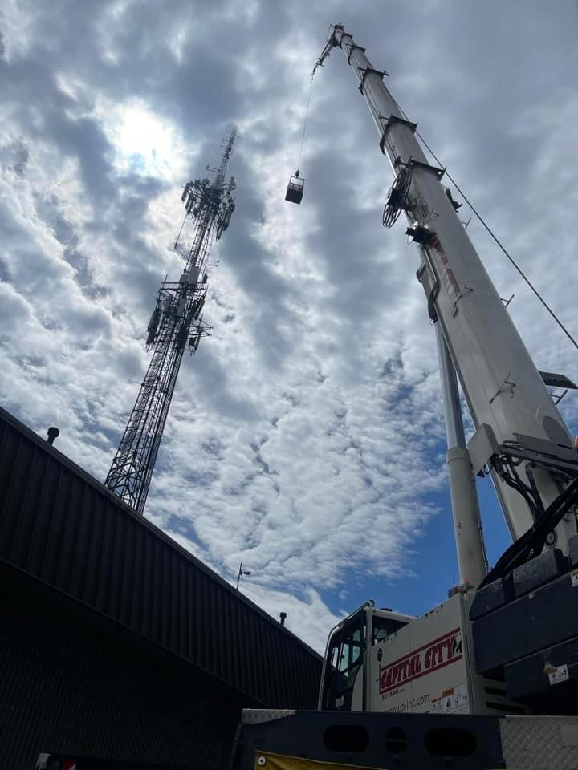
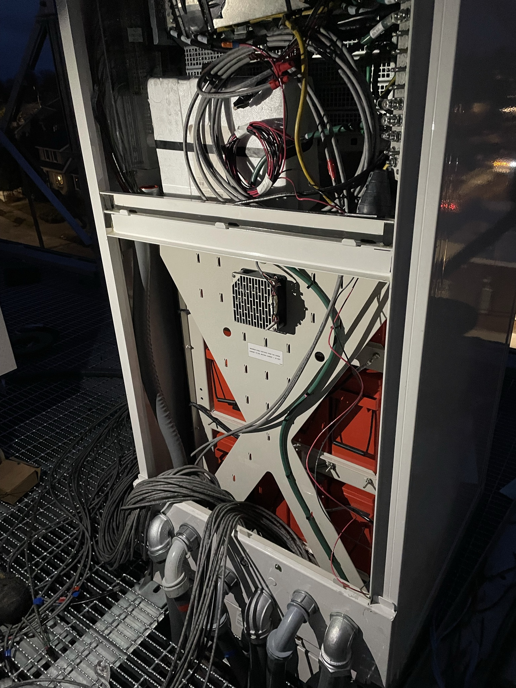
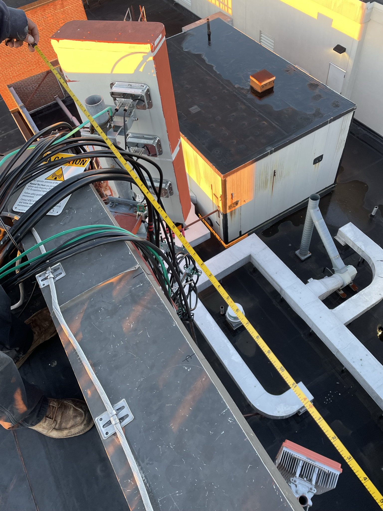

Tower crews · field software · New England
I build
cell sites.
I run a four-person tower crew in New England. Steel, shelters, DC power, fiber, RF: I plan the job, then climb up and do it, and I stay with it through closeout.
I also build software: local models, agent runtimes, inference and orchestration, and the tooling around them.
Class A CDL · residential construction, lineman school, tower work since 2016


Two halves of one job.
A cell site is steel, power, fiber, and RF on the same square of ground, and every part of it has to be right before the site goes on air. I have done all of it as a tradesman and now run the job: climbing, rigging, DC power, fiber, RF, a four-person crew taken from the plan through closeout.
Then there is software: local models and agent runtimes, which is the same shape of problem in a different medium. A pile of moving parts that all have to agree with each other, in a place that is inconvenient to reach.
I am not keeping the two apart. A crew that can read the RF side and write its own tools is the thing I am building.







What I take on.
Up on the steel
- Structural steel. I put up towers, antenna mounts, and platforms, and I modify the ones already carrying traffic.
- Work at height. Climbing, rope access, fall protection, and rescue are the baseline. Aerial lifts when the lift is the right tool.
- Heavy rigging. Big-crane lifts on rigging plans I write, with advanced rigging qualifications behind them.
- Wireless RF. Antennas, radios, RRUs, TMAs, and coax, plus PIM testing and the troubleshooting after a bad sweep.
Down at the shelter
- Electrical systems. Wiring, DC power cabling, electrical equipment, and generator installs.
- Environmental systems. Shelters, outdoor cabinets, and cooling, with a little plumbing when the job needs it.
- Fiber optics. Fiber installs, transmission lines, and underground fiber.
- Site integration. Tying power and cabling into the radio gear while the site stays on air.
Getting it there
- Construction. Residential and site construction, structural assembly, hand tools and power tools. It is where I started in 2016, and it still shapes how I build.
- Utility systems. Lineman school and an apprenticeship behind the electrical work: infrastructure and field utility work.
- Equipment and logistics. Heavy equipment, trucks and trailers, lifting gear, and materials handling, on a Class A CDL.
- Field safety. Job hazard assessments, rescue plans, rigging plans, and worksite inspections: safety as a written plan, not a talk.
Running the job
- Leadership. I run the four-person crew: site execution, the field calls, and the closeout documentation at the end.
The other half
- AI and computing. GPUs, local model inference, open models, agent runtimes, workflow orchestration, and the software that holds it together. RCOS is the current thread.
Working together.
If you are scoping a site build or a retrofit, or you are building field software and want the read of someone who has climbed the steel, write to me.